Resources
1. Add a Resource Module
- Step 1: Right-click and select "Add Module" or Press "Ctrl"+"M"
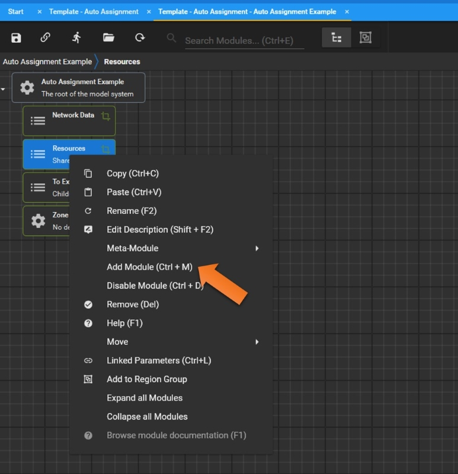
- Step 2: Select Resource Module
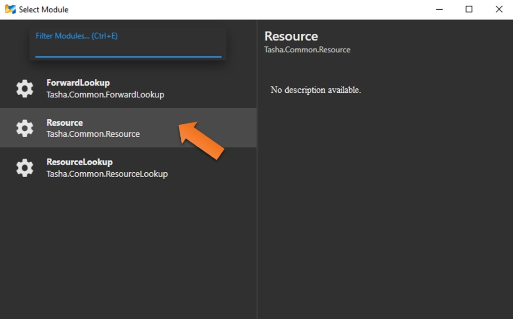
- Step 3: Enter the Resource Name
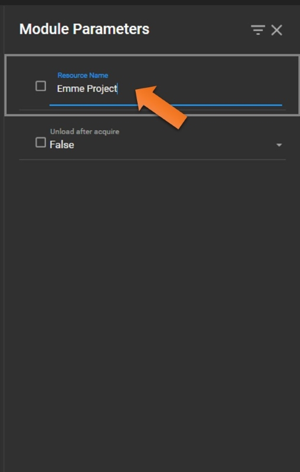
2. Add a Data Source Module
- Step 1: Double-click Data Source and Type keywords to find "ModellerControllerDataSource" module
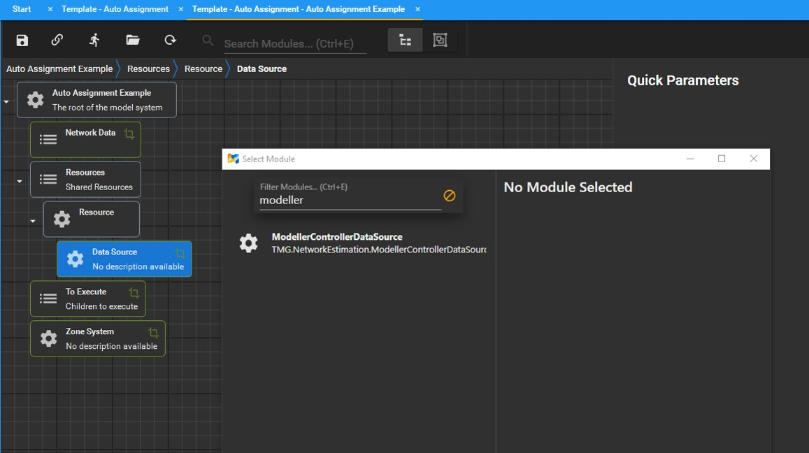
- Step 2: Double-click Project Folder to add "DirectorySeperatedPathFromOutputDirectory" Module
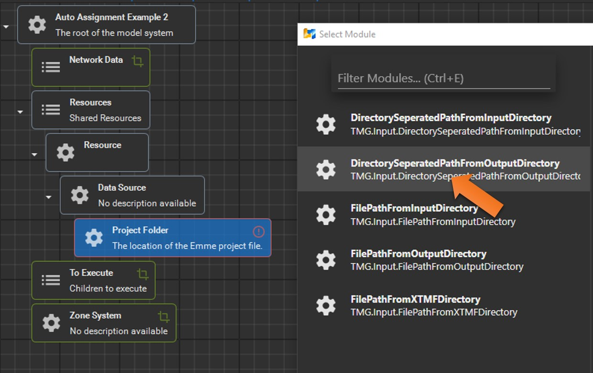
- Step 3: In the Module Parameters window of Project Folder, right-click the top area of File Name section
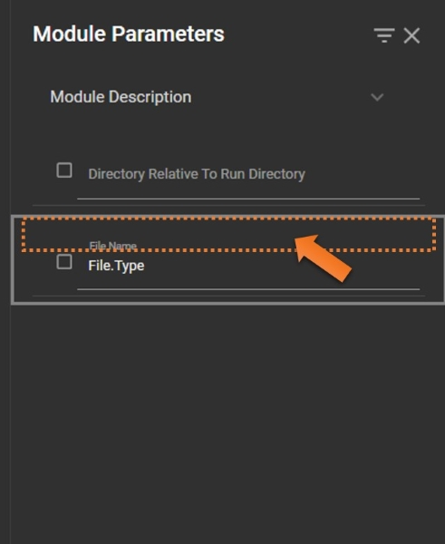
- Step 4: Click "Select File" to find the target Emme Project you would like to use.
(Note: it is recommended to use a different project other than the one you are working on to avoid unintended changes. For example, an empty Emme project with at least 1 scenario will be fine.)
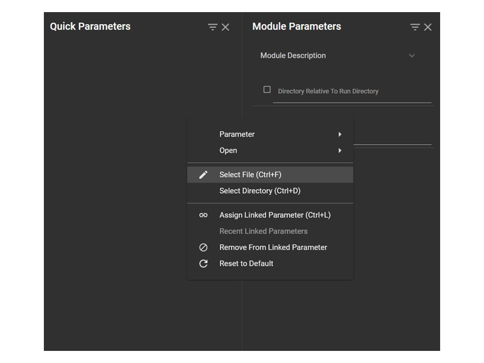
Alternatively, you may click anywhere of the File Name section and press "Ctrl"+"F" to select the target Emme project file you would like to use
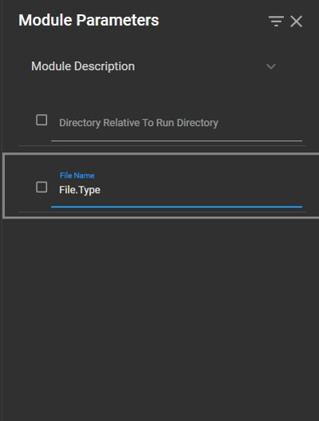
- Step 5: Type "../EMMENetworks/" in the Directory section
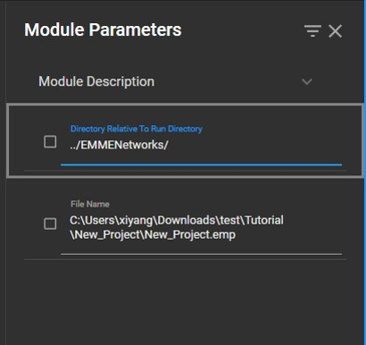
3. Convert the Modules into a Meta-Module for Easy Views and Changes (Optional)
- Step 1: Right-click Resource and select "Meta-Module"->"Convert To". Alternatively, Click Resource and press "Ctrl"+"Shift"+"M".
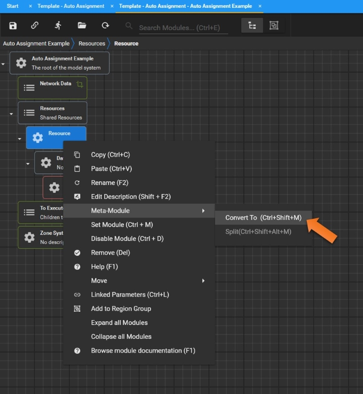
- Step 2: Rename the Meta-Module (e.g., Emme Project File)
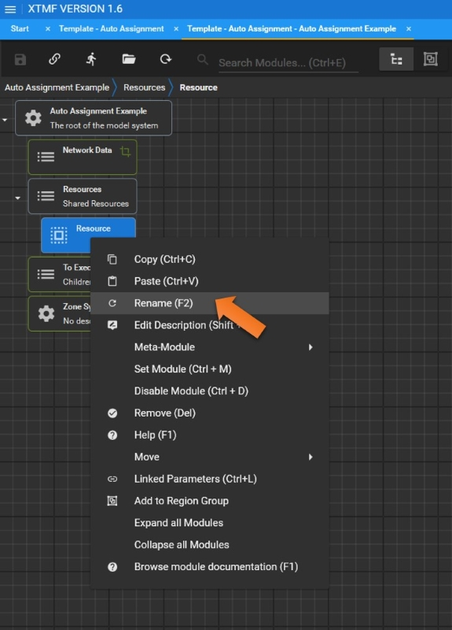
4. Add Module Parameters to Quick Parameters (Optional)
Check the box of the File Name section to add it to Quick Parameters window for easier changes later.
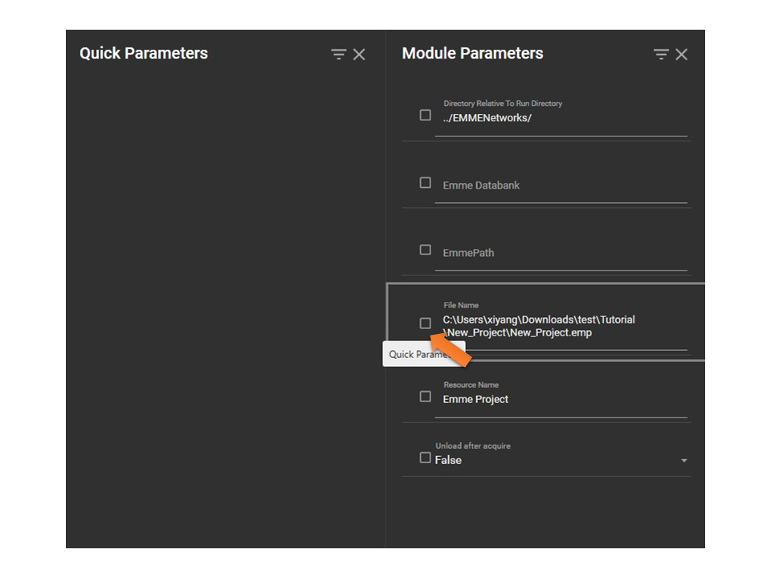
Now you can modify the parameter values in Quick Parameters when switching between modules.
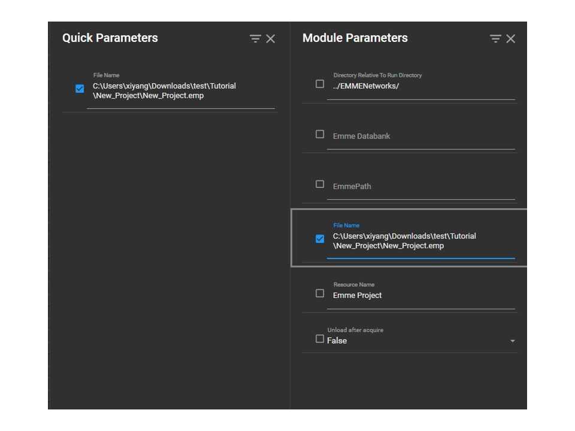